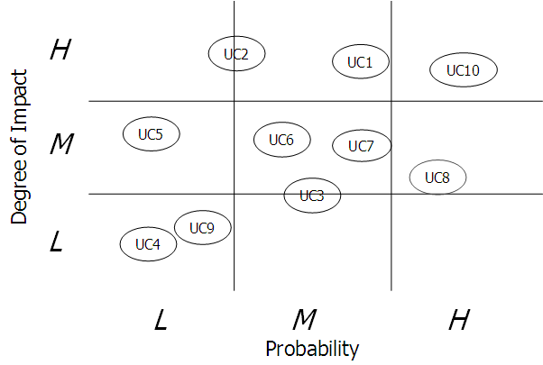

OUM |
Technique Overview |
||
Method Navigation |
Current Page Navigation |
||
|
|
||||||||
The purpose of this technique is to assess use case risk. Use this technique whenever assistance is needed in evaluating use cases for the level of certainty that the use case will have risks that at some point become issues.
Risk Portfolio Chart - The Risk Portfolio Chart is used to assess the risk of use cases. Use cases are graphically plotted on the chart to show the probability that the risk(s) will occur and the degree of impact if the risk actually becomes an issue for the project.

No. |
Step | Component | Component Description |
|---|---|---|---|
1 |
Review the use cases that describe how the functional requirements will be satisfied. | ||
2 |
Prepare a Risk Portfolio Chart. | Risk Portfolio Chart | The Risk Portfolio Chart is used to access the risk of use cases. |
3 |
Plot each use case on the chart showing the probability that the risk(s) will occur and the degree of impact if it does. | Risk Portfolio Chart | The Risk Portfolio Chart shows use cases with the highest degree of impact and highest probability of the risk(s) occurring. |
Sometimes it is useful to graphically plot use cases on a Risk Portfolio Chart. Each use case is assessed and then plotted to show the probability that the risk(s) will occur and the degree of impact if it does. The higher the probability and impact, the more emphasis a project manager should place on that use case to ensure the proper mitigation strategy is applied to eliminate or reduce the risks.
OUM recommends using this technique to assess risk in conjunction with other techniques for customer priority (pair choice), complexity (using number of actors and actor interactions), and dependency (using packaging/grouping of related use cases).
OUM's architecture-centric approach recommends that you look at all use cases as a group early on to rate them in terms of risk, priority, complexity and dependency in order to determine which are the most architecturally significant.
This technique can be used by Project Management professionals when assessing risks overall project risks on the Project Management Risk Log.
There are no templates available to assist with this technique.
This technique is recommended for use in the following OUM tasks:
| Task | Usage |
|---|---|
| Use this technique to assess overall project risk. | |
| Use this technique to assess the level of risk for each use case. | |
| Use this technique to prioritize items on the MoSCoW List. | |
| Use this technique to prioritize use cases. |
Use the following criteria to check the quality of this technique:

Copyright © 2006, 2016, Oracle and/or its affiliates. All rights reserved.